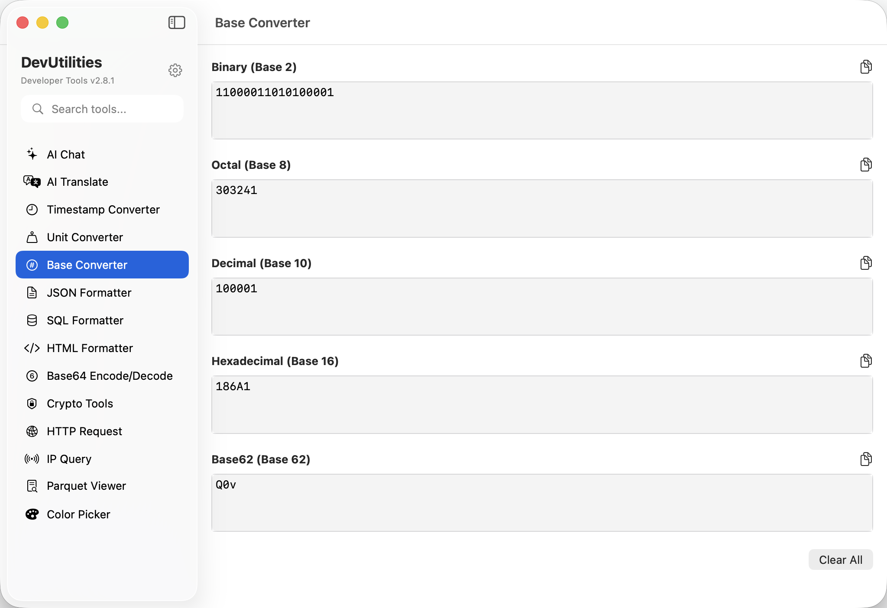

Base Converter Seamless Number System Conversion
Convert numbers between binary (base 2), octal (base 8), decimal (base 10), and hexadecimal (base 16) number systems with real-time validation. Features instant mutual conversion, input validation with clear error messages, and intelligent number base detection. Essential for low-level programming, computer science education, and digital system design.
4-Way Conversion
Real-time Validation
Instant Results
